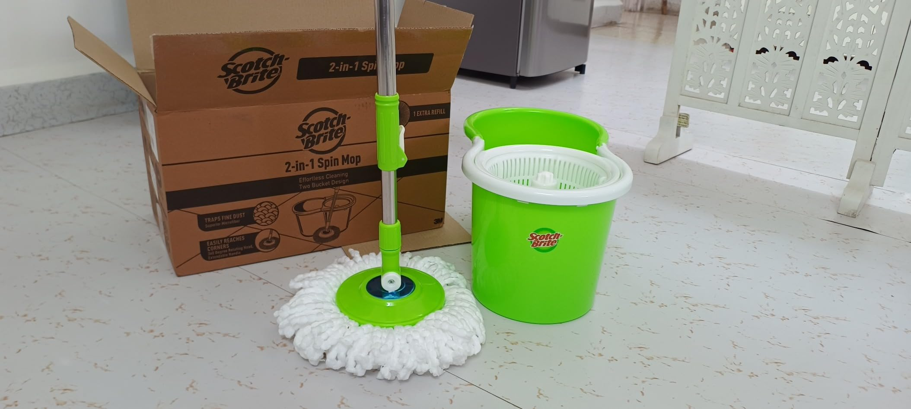

Scotch-Brite 2-in-1 Bucket Spin Mop (Green, 2 Refills), 4 Pcs

Price: ₹1,088
For latest discounts, please click on "Buy Now"
Why you should BUY!
The Scotch-Brite 2-in-1 Bucket Spin Mop (Green, 2 Refills) is a highly efficient cleaning tool designed to make your cleaning tasks easier and more effective. Its innovative design allows for easy maneuverability, and the high-quality microfiber refills provide superior cleaning performance. This spin mop is perfect for all types of floors and helps you maintain a spotless home with minimal effort. Upgrade your cleaning routine with the Scotch-Brite 2-in-1 Bucket Spin Mop.
Rating: ★★★★☆ (4.2/5)
How to USE
Using the Scotch-Brite 2-in-1 Bucket Spin Mop is simple and straightforward:
- Assemble the mop by attaching the microfiber refill to the mop head.
- Fill the bucket with water and add a small amount of cleaning solution if desired.
- Dip the mop head into the water and spin it in the wringer to remove excess water.
- Mop the floor by moving the mop head back and forth. The design makes it easy to maneuver.
- When the mop head becomes dirty, rinse it in the bucket and spin it in the wringer again.
- Continue mopping until the entire floor is clean.
- After use, empty the bucket and rinse the mop head thoroughly.
- Store the mop by placing it in a convenient location.
Enjoy a spotless home with minimal effort using the Scotch-Brite 2-in-1 Bucket Spin Mop!
Buy Now
Go Back